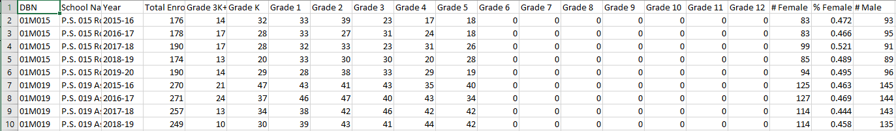
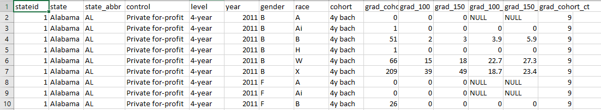

Data Gathering
1. Search datasets that are and download datasets on websites (kaggle, Data.World etc.)
Students Enrollment Data 2015 through 2020 Source
The student demographic and enrollment data of the schools in the United States from 2015-2020. Includes the female and male enrollment numbers from grades K to 12. Other variables include numbers and proportions of students races and poverty situation. Data is labeled, quantitative and time-dependent.
Download Raw Data

College Completion Data Source
The graduation data of the colleges in the United States since 2011. Includes the graduation number and rate of different students genders within 100% or 150% expected time. Other variables include state that the college is in, the type of the college (private/public, for-profit/non-for-profit), and students race. Data is labeled, qualitative and quantitative.
Download Raw Data

Text Data, From Twitter Source Code
The text data acquired using twitter API. I used language parameter set to English. In this part, I plan to get 2 raw datasets with different keywords for the convenience of further analyses. For the first one I used "USA", "girls" and "schools" (Raw Data); and for the second one instead of "school" I used "education" (Raw Data);. The point of this is that I want to compare the tweets around these keywords and try to find out that whether the situation of girls in school and the situation of girls' education are two different topics.